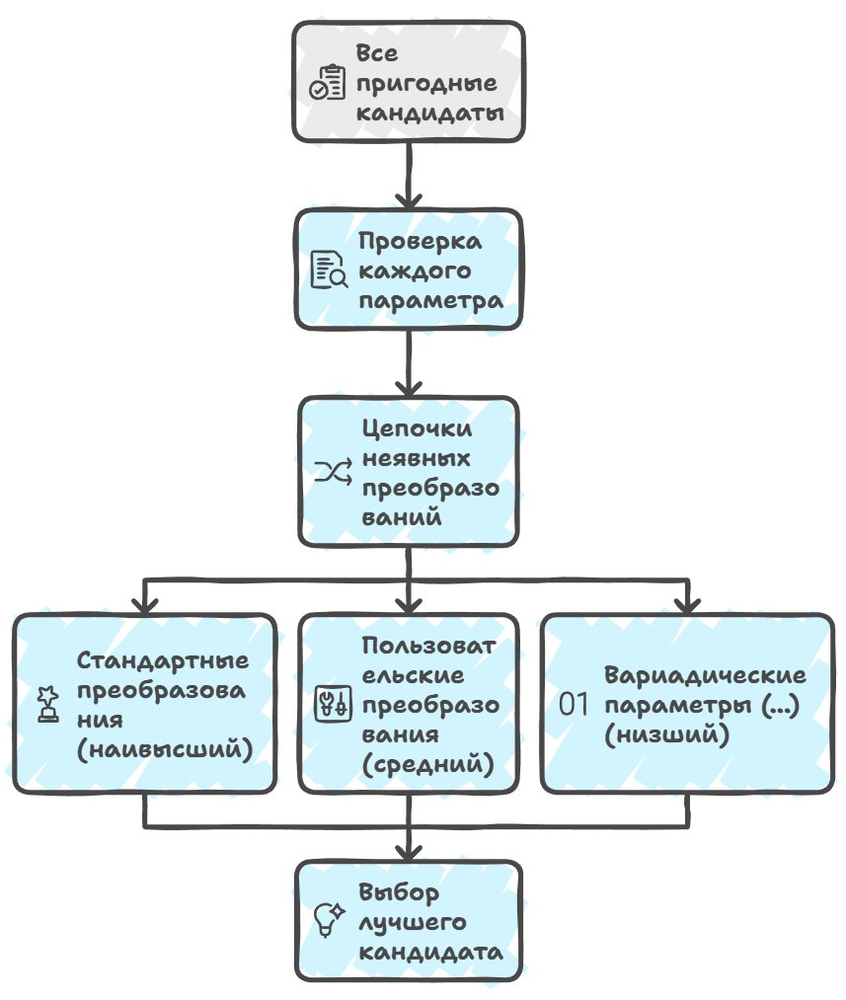

In the previous article I broke down how qualified lookup works and how using namespace participates in it only as a fallback, when there are no own declarations in the specified scope. The compiler first looks at what's declared directly in the current context, and only on failure moves on to names mixed in via the using directive. The scheme would seem transparent and predictable: there's a lookup scope, there's the priority of explicit declarations, there's the "N-declarations rule" as insurance.
But as soon as we move from variables and functions to more general mechanisms in code, this transparency immediately starts to break down — and in the most ordinary code that every developer writes from their first days of learning. By the language rules we can place a using namespace directive anywhere, but if something is declared explicitly in the scope named by the qualifier, qualified lookup will find exactly that declaration, and only if there's no explicitly declared name does the compiler start considering names made visible through using namespace, and so on down the chain.
But there's a slippery spot here that most textbooks and courses keep quiet about, sidestepping the topic of operators. For example, the left-shift operator << can be defined in any namespace.
std::cout << "hello";In essence this code corresponds to a function call, and the compiler sees in it nothing other than
operator<<(std::cout, "hello");But for this to work the way we now see it, the function operator<< has to be found in the std namespace, that is, what we actually need is a call of a form that doesn't exist in pure form:
std::operator<<(std::cout, "hello");But if you look at the original syntax std::cout << "hello", the qualifier std:: isn't there in pure form — or rather it is, but only for the left operand cout, and formally std:: isn't connected to the operator's name at all. So how does the compiler understand where exactly to look for the right operator?
The answer to this question was proposed by Andrew Koenig in the early 1990s, and today we know it as argument-dependent lookup, or ADL, which makes the compiler look for the function in the namespaces associated with the types of the call's arguments. But it will do such unqualified lookup only if it found nothing suitable in the current lookup scope, which also adds headaches both for compiler developers and for the developers who use those compilers.
namespace N {
struct A {};
void f(A);
}
int main() {
N::A a;
f(a);
}On the call f(a), unqualified lookup of the name f in the current scope finds nothing, thereby enabling ADL. The compiler then sees that the argument a has type N::A, and therefore also sees the namespace N associated with that variable, then looks for f inside N, finally finding N::f. Thus the call f becomes valid.
This is also why stream output lookup works: through argument-dependent lookup (ADL) the compiler sees that the left argument std::cout has a type defined in the std namespace, and looks for a suitable operator<< there. But if unqualified lookup found any entity at all — be it a type, a variable, a template, anything — then ADL is turned off completely.
typedef int f;
namespace N {
struct A {};
void f(A);
}
int main() {
N::A a;
f(a);
}Here unqualified lookup of the name f immediately finds typedef int f and is considered successful, that is, we don't look further. Accordingly the compiler interprets f(a) as a functional cast, that is, an attempt to cast a to int. And this is perfectly correct syntactically, but clearly not what the programmer expected. This is exactly why the interaction of ordinary unqualified lookup and ADL sometimes leads to extremely unexpected results, when an "obvious" function turns out to be completely invisible to the compiler.
Here's another slippery example (looks safe, right?):
namespace std {
struct ostream {
ostream& operator<<(const char*) {
printf("world");
return *this;
}
};
ostream cout;
}
using namespace std;
int main() {
cout << "hello";
}Here the name std is found by unqualified lookup and refers not to the standard library at all but to our local substitute, whereas the spelling ::std::cout unambiguously points to the global namespace and the real std.
This is exactly why the standard library always uses fully qualified names with ::std:: and doesn't rely on unqualified lookup — as you see, it's too easy to "hijack" it with local tricks.
This example vividly shows why you need to know which entity you're using in code. But even if we unambiguously specified the namespace, the compiler still has to solve the problem of which specific function candidate to choose among many overloads. Especially if the functions can take different numbers of arguments, have default parameters, or require implicit conversions.
And here the concept of function viability comes into play, which we'll discuss further — what it is and why it matters in overload resolution.
Checking a function's viability
First of all, the viability check evaluates whether a particular candidate is suitable for the call with the given set of arguments, by various criteria. For example, if we have a function taking two parameters and we try to call it with one argument, such a candidate is automatically deemed non-viable, and in this case the compiler simply won't be able to match the call to the function definition, excluding the variant from the overload list.
// A function with two parameters
void greet(const std::string& firstName, const std::string& lastName) {
cout << "Hello, " << firstName << " " << lastName << "!";
}
int main() {
std::string name = "Alice";
// An attempt to call the function with one argument
// greet(name); // Error: no matching overload
// The correct call with two arguments
greet(name, "Smith"); // Works: Hello, Alice Smith!
return 0;
}Similarly, a class's private methods can't be chosen as candidates from outside the class, and constructors with the explicit modifier are also taken into account in the check, since they require an explicit call.
class Person {
private:
void secretGreet() {
std::cout << "This is a secret greeting!" << std::endl;
}
public:
void publicGreet() {
std::cout << "Hello!" << std::endl;
}
};
int main() {
Person p;
// p.secretGreet(); // Error: the method is inaccessible
p.publicGreet(); // Works: the method is public
return 0;
}The point is this: an explicit constructor remains a viable candidate for direct initialization (an explicit call), but is excluded from the candidates in copy initialization and implicit conversions. That is, it doesn't "always require an explicit call" in the sense that a private method is "always inaccessible from outside" — it's specifically filtered out in those contexts where an implicit conversion would be required.
class MyString {
public:
explicit MyString(const char* s) { /* ... */ }
};
void print(MyString s) { /* ... */ }
int main() {
MyString a("hello"); // OK: direct initialization, candidate is viable
MyString b = "hello"; // Error: copy initialization,
// the explicit constructor is excluded
// from the candidates
print("hello"); // Error: implicit conversion
// is forbidden
print(MyString("hello")); // OK: explicit conversion
}This behavior was adopted by the committee as a way to weed out a function in advance, at the stage of forming the candidate list, in certain call contexts, even before the compiler begins comparing viable candidates against each other by quality of argument match.
After the compiler discards all unsuitable variants, the stage of choosing the best candidate begins. Here implicit conversion sequences come to the rescue, which the compiler applies to each function parameter with the following priorities: standard conversions, user-defined conversions, and, after everything, variadic parameters denoted by …

struct S {
S(int x) { std::cout << "S(int) constructor called\n"; }
// user-defined conversion
};
void foo(double d) {
std::cout << "foo(double) called\n";
}
void foo(S s) {
std::cout << "foo(S) called\n";
}
void foo(...) {
std::cout << "foo(...) called\n";
// variadic version
}
int main() {
int x = 42;
// Which foo will be called?
foo(x);
return 0;
}Let's look at the example above in more detail. We have three overloads of the function foo:
- the first takes a
double, and for a call with anintargument the standard conversionint → doublewill be applied here; - the second overload takes an object of type
S, where a constructorS(int)exists, and in this case a user-defined conversion frominttoSis required; - the third version of the function is a variadic overload with
..., which can take any argument but has the lowest priority.
Now we call foo(x), where x has type int. The compiler will gather all possible overloads, and all three fit: each of them can be called with an int argument, albeit through different conversions.
Now we go through the conversion sequences for each candidate, as the compiler does, which in the end chooses the execution path with the lowest complexity.
- for
foo(double)the standard conversionint → doublemust be applied, that is, minimal conversions are needed — let's say it has complexity 1; - for
foo(S)a user-defined conversion through the constructorS(int)has to be used, which is a bit harder and has complexity 2; - for the variadic version
foo(...)a variadic conversion will be applied, which involves the most complex logic, with complexity 3.
"Complexity 1, 2, 3" is my simplification for the example. In the standard this is called the conversion rank, and ranks don't "add up like complexity." After such an account you might get the impression that the compiler somehow adds up points, but in reality, in real compilers, conversion sequences are compared by the "best on the worst parameter" rule. And every compiler has its own quirks with these rules.
Why was exactly this order chosen? Historically it's tied to the evolution of the C++ language itself and to the experience of using it in early C projects, where strict type rules had already settled. The idea is believed to belong to Bjarne and the early C++ development team at Bell Labs, to reduce the computational complexity on the machines of that time when they were designing C++. I think you've once again been convinced that many modern decisions grew out of the 80s–90s, when the language was actively absorbing new ideas but was constrained by hardware performance. This is how it was achieved that the compiler chooses the most "natural" way to call a function without resorting to complex conversions when possible.
And a little more of a historical digression...
Early C++ (Cfront, 1980s): the first C++ compiler used step-by-step elimination of candidates — first exact type matches were checked, then standard conversions were applied, then user-defined ones, and this process was completely explicit in the compiler's code and based on conversion ranking in the compiler itself.
GCC and Clang: modern compilers keep this hierarchy, but instead of step-by-step elimination they build a candidate table, marking for each parameter the "conversion type" and its rank. So when choosing the best candidate the compiler only needs to take the suitable one from the top of the table to unambiguously pick the function with minimal and least complex conversions.
MSVC: similarly builds conversion sequences and takes their priorities into account, but uses candidate lists (the implementation is optimized for compilation speed and handling large overload sets), using internal "tags" for ranking.
But you need to understand that even standard conversions have subranks, and converting char to int is considered more preferable than converting int to double, and the compiler uses subranks to choose the best variant among many possible candidates.
void foo(int x) {
std::cout << "foo(int) called\n";
}
void foo(double x) {
std::cout << "foo(double) called\n";
}
int main() {
char c = 'A';
foo(c); // Which variant will be called?
}In this example we have two candidates: foo(int) and foo(double). The argument has type char, and the compiler can convert char to int (a small standard conversion), which is preferable. But the compiler can also convert char to double (also a standard conversion), but with a lower priority, because it requires widening first to int and then to double. As a result foo(int) will be called, because the conversion char → int is more "natural" and simpler than char → double.
Again, for the article I simplified the subranks of standard conversions. In the standard char → int is an integral promotion (rank exact-match-ish), while char → double is already a floating-integral conversion (a full conversion, of lower rank). Promotion and conversion are different categories, and promotion always beats conversion.
Another example with overloads and default values (godbolt):
void bar(int x, int y = 10) {
std::cout << "bar(int, int) called\n";
}
void bar(double x) {
std::cout << "bar(double) called\n";
}
int main() {
int a = 5;
bar(a); // Which variant will the compiler call?
}Here we again have two candidates: bar(int, int), but the second parameter has a default value, so the call bar(a) fits, and there's bar(double), where int → double can be converted.
The compiler weighs the priorities: bar(int, int) requires no conversion (int → int) and uses the default value for the second argument, whereas bar(double) requires an implicit standard conversion (int → double), so bar(int, int) will be called.
=delete
=delete begs to be in the article: deleted functions participate in overload resolution as viable candidates and can be chosen as the best, after which the call is rejected. This is the most striking case where "viability" and "availability" diverge, and it nicely illustrates why the notion of viability is needed at all.
When we mark a function with = delete, many perceive it intuitively as "the function is gone" and think of something like its removal from the code. In reality it's exactly the opposite: a deleted function fully participates in the viability check and in ranking, behaves like an ordinary candidate, and the compiler can even choose it as the best overload.
And only after the choice is made does the compiler look at the = delete mark and reject the call with an error. This illustrates why the notion of viability as a separate stage is needed at all: "viable for participation in resolution" and "can actually be called" are two different things.
void process(int x) { std::cout << "int\n"; }
void process(double x) = delete;
int main() {
process(42); // OK: process(int) is called
process(3.14); // error: process(double) is chosen,
// but it is deleted
process(1.0f); // error: float → double is more precise than float → int,
// so the deleted process(double) is chosen
}At first glance it seems that since process(double) is "deleted," then on the call process(3.14) the compiler should just ignore it and look for another overload — for example, convert double to int. But it won't do that: the deleted overload remains a viable candidate, wins resolution by the usual ranking rules (for double an exact match is better than a conversion to int), and only then runs into = delete.
The overload process(int), which could accept a double through a standard conversion, isn't even considered — it would be chosen only if process(double) were absent from the candidate list altogether. This gives an idiomatic technique: forbidding a call of a function with certain types not by removing it from the overload set, but on the contrary by leaving it there deliberately so it "intercepts" unwanted arguments.
struct Handle {
void set(int id);
void set(void*) = delete; // forbid passing raw pointers,
// including nullptr and NULL
};
Handle h;
h.set(42); // OK
h.set(nullptr); // compile error, not an implicit conversion to intIf = delete meant "removing the function from consideration," then h.set(nullptr) would call set(int) through the conversion nullptr → 0, and we'd get a hard-to-catch runtime bug.
But since set(void*) remains a viable candidate and wins resolution (for nullptr a pointer is an exact match, while a conversion to int is not), the compiler catches the error at compile time. This is exactly why formally distinguishing "viable" from "available" is a separate tool within the language, on which a whole class of defensive techniques of modern C++ rests.
What this all means for the developer
In large codebases the process of viability checking and choosing the best candidate can be very complex, because you have to account for the number of parameters, function availability, default values, implicit conversions, and the priorities of various kinds of conversions. This is exactly why one and the same function can be called differently depending on which overloads are available in the current context and which arguments are passed. These are the basic rules for choosing the best candidate in function overloading, and I hope I've given an understanding of how the compiler assesses function viability.
As material for the next articles I see covering the processes that govern the types of the arguments and return values themselves in templates. This is where we'll first encounter type deduction — the mechanism by which the compiler deduces the types of template parameters from the passed arguments, and template instantiation, which substitutes these types into the template body to create a concrete function or class.
Understanding these mechanisms determines which template overloads will be chosen and how function calls will be resolved — and that's what the next article will be about…
P.S. I've published the first 7 chapters of "Playful Programming" on GitHub in ru/en (playful_programming_cpp), although @OlegSivchenko suggests calling the series "Pragmatic C++" — the questions raised are just too practical and dull. If you feel like fixing the text or the code examples, drop me a message.
← All articles